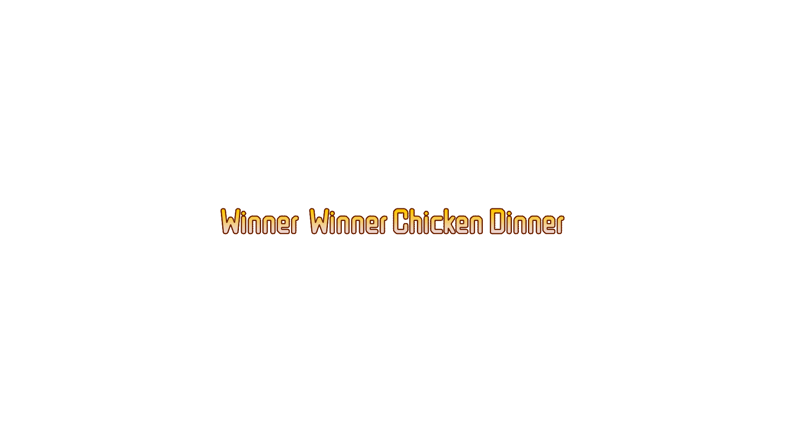

通關！任務完成
你已收集完整碎片，石碇山城迎向復甦。

— 偵查山城的環境危機 —
「石碇，不只是茶鄉，它曾是閃耀的煤礦之城。然而，淘金夢醒，環境留下了傷痕。你，是『山城復甦行動組』的成員，你的任務是響應文山溪發出的『異常訊號』。訊號中夾雜著舊時礦工的暗語：『欲淨水脈，須解舊夢。』你必須追溯文山煤礦的興衰歷程，找出影響溪流生態的『三大病灶』，拼湊出完整的生態修復行動方案！」
任務目標： 通過三道關卡，收集【修復行動碎片】，解鎖最終的實地行動。
請選擇你在此次「山城復甦行動組」中將扮演的身份，你的角色能力將在關鍵時刻助你一臂之力。
進度：
問號
(注: 使用後，將獲得額外提示或排除錯誤選項。)
恭喜！你已成功偵查並收集到完整的【轉型方案】、【修復技術】與【協力網絡】三張碎片，拼湊出**「石碇復甦藍圖」**！
現在，你必須前往具歷史意義的石碇不見天街（或進行虛擬觀察），觀察該場域的空間設計智慧，並將你設計的「石碇復甦藍圖」具體化：
設計一個結合遺址活化、生態復育、社區協力元素的遊戲化行動方案（例如：一個實地導覽路線圖、一個生態教育展板設計、或一份社區倡議報告）。
將最終成果透過網路平台公開分享，發佈地方行動倡議，完成山城復甦行動！
感謝你為石碇山城與文山溪所做的努力！